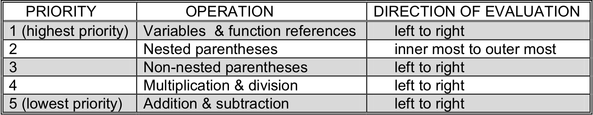

8.5 Expressions and assignment
As we have just seen, the “prompt” statements can be used to store user input into a variable. The “prompt” statements are really just specialized versions of the more general “assignment” statement. Assignments take the form:
variable = expression;
The symbol “=” is called the assignment operator. It is related to, but unique from the mathematical “equals” operator. Assignment statements work by first evaluating the expression on the right hand side of the assignment operator to determine its value. Once that value has been computed, the value is then stored in the variable named on the left hand side of the assignment operator.
Watson JavaScript supports two major types of expressions: text string-valued expressions and numeric-valued expressions. Since the variable named on the left hand side of the assignment statement specifies where the value of the right hand side expression is to be stored, it is important that their types match. In other words, if a numeric variable is named on the left hand side of the assignment operator, then a numeric-valued expression must occur on the right hand side of the operator. Similarly, if a text string-valued expression occurs on the right hand side of the assignment operator, then a text variable must be named on the left hand side. The following are valid assignment statements, assuming firstName is a text variable, and total and age are numeric variables.
firstName = “Chris”; total = 0; age = 41;
The numeric expressions supported by Watson JavaScript are very similar to the spreadsheet formulas presented in Section 2.4.2 of Chapter 2. Watson JavaScript numeric expressions support the same math operators as do spreadsheet formulas; namely, addition “+”, subtraction “-”, multiplication “*”, and division “/”. The precedence of these operators remains the same, with multiplication and division being performed ahead of addition and subtraction. Parentheses for grouping sub-expressions are used identically in both systems.
The major difference between spreadsheet formulas and Watson JavaScript expressions are that Watson JavaScript expression use variable names in place of cell references.
Thus, assuming X and Y are numeric variables,
Y + Z
Figure 8.8: Operator precedence in Watson JavaScript mathematical expressions
will be evaluated as the sum of the value stored in Y together with the value stored in Z. Assuming that Y holds the value 15 and Z holds the value 10, the expression would evaluate to 25. If this expression appeared in an assignment statement such as
X = Y + Z;
which is read “X is assigned the value of Y plus Z”, X would take on the value 25. Of course, if Y and Z held different values, such as 100 and 250, then the value stored in X would be different as well, 350 in this case.
The priorities, or precedence, of the various Watson JavaScript mathematical operators are summarized in Figure 8.8. This figure is almost identical to Figure 2.5, which contains the priorities for spreadsheet formulas.
When evaluating expressions, the general rule is that all operations at the same “level” are performed one after another working through the expression from left to right. Evaluation continues in this manner until a single result is computed.
For example, the expression:
Z + Y / 3 * 8
Where Y is again 15 and Z is 10, would be evaluated in the following way. First, Z would be replaced with 10 and then Y with 15, giving the intermediate expression:
10 + 15 / 3 * 8
There are now three operations that need to be performed to compute the result: one addition, one division, and one multiplication. Since multiplication and division are at a higher precedence level than addition and subtraction, the division of 15 by 3 is performed, resulting in:
10 + 5 * 8
Next, the multiplication 5 by 8 is performed, giving:
10 + 40
Finally, the addition takes place, producing the result:
50
Assuming the expression had occurred in the statement
document.writeln(Z + Y / 3 * 8);
the value 50 would have been output to the display.
In addition to numbers, Watson JavaScript also provides limited support for text strings. As we have seen, text strings may be represented as both constants and variables. They can be written to the display screen (via “write” and “writeln”), read from the keyboard (via “prompt”), and assigned to variables (via assignment statements).
For example, the following:
president = “George Bush”;
is a perfectly valid assignment statement, as long as president is a text variable. When executed this statement will place the value of the text string “George Bush” into the text variable president. Likewise,
commanderInChief = president;
is valid as well, assuming both commanderInChief and president are text variables. The statement places a copy of the current value held in president into the variable commanderInChief.
Watson JavaScript includes one built in operation that may be performed on text strings. This operator, called concatenation, allows two separate strings to be merged together. In a sense, concatenation is the text string equivalent of the mathematical operator addition. For this reason, the JavaScript symbol for concatenation is “+”.
Whenever a “+” symbol is encountered in an expression, JavaScript determines its meaning by looking at the type of the variables and constants appearing in that expression. If these variables and constants are numeric, then JavaScript interprets “+” as addition. If the variables and constants of the expression are text-based, then JavaScript interprets “+” as concatenation.
For example, the following is a legal assignment statement, assuming president is a text variable.
president = “George ” + “Bush”;
This statement would first evaluate the text expression “George ” + “Busch” which generates the text string “George Bush”, and then assign that value to the text variable president. Note that in order for this statement to have meaning in Watson JavaScript, president must be a text variable and not a numeric variable. Also note that a space was included at the end of the first text string, “George ”. This was necessary so that when this string was concatenated with “Bush” a blank would appear between the first and last name.
Exercises for Section 8.5
-
Show what would be printed by the following program.
- var A; // Numeric
- var B; // Numeric
- var C; // Numeric
- A = 5;
- B = 10;
- C = 2;
- document.writeln ( A / B * 100 );
- document.writeln ( A + B / C );
- document.writeln ( B * C - A );
-
Write a Watson JavaScript program that computes the product of three numbers entered by the user. In other words, the program should ask for and receive three integer values from a user, multiply these three numbers together, and then print the product. This program will be similar to the program of Figure 8.7 that computes the sum of two numbers.
-
Write a Watson JavaScript program to convert a temperature from degrees Fahrenheit to Celsius. The conversion is defined by the formula C = 5/9 (F-32)
-
Write a Watson JavaScript program to compute the area of a rectangle given its height and width, in inches, as input. 3
Footnotes
3 It is interesting to note that before the invention of spreadsheets, programmers spent much of their time writing little special purpose programs, not much more complex than those in problems 3 and 4. These programs, which generally computed tables of values based on various formulas, were used for engineering design, financial analysis, and economic modeling. Today, most of these tasks can be accomplished with general-purpose spreadsheets.